空拍機地形測繪-QGIS內業土方計算
前言
本篇文章為空拍機地形測繪第三篇，前篇介紹在這空拍機地形測繪-WebODM架設實戰，在QGIS內業處理流程中需要先有個概念-土方計算很難完全準確，只能盡量讓地形地貌真實的呈現，再依照計算成果作為後續甲乙方協商的數量基準。
至於如何讓地形地貌真實的呈現，主要還是透過點雲品質報告搭配正射影像套疊濾除不合理點雲的方式進行，即便如此，模型終究是一個相對合理數值，如牽涉到計價時，實務上會透過電子聯單作為數量依據。
前處理資料
- 點雲品質報告
- 1m點雲.csv
- 正射影像.tif
- DTM.tif
操作步驟
檢核UAV產製的成果報告是否可用
檢視UAV點雲品質報告有關 Error Z (m)，可見地面控制點高程誤差均落於-0.038~0.048之間，可視為相對合理之公分級模型，允許將點資料納入QGIS作為後處理基底資料。
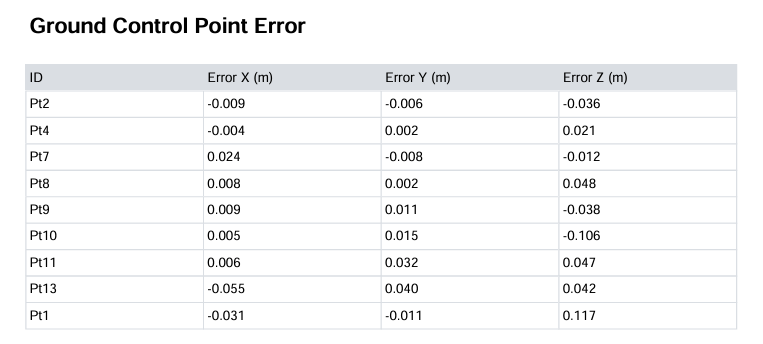
濾除不合理之點雲資料
點雲生成過程中，必然會有建築物、草堆、營建材料堆置處等等被誤認為地形的點，濾除方式可先觀測該區高程數值佔多數為主，如裸露地高程大多落在10m左右，則可以將超過12m或低於8m的數值當作異常數值做初步刪除，後續再以正射影像所拍攝位置按合理性做二次刪除。
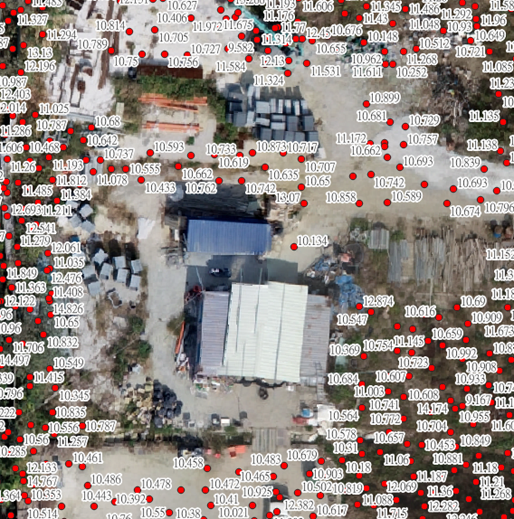
製作UAV_DTM
當點資料皆處理完妥，可以透過 TIN Interpolation 工具進行DTM生成，生成後預設會呈現黑灰白的狀態，DTM是由很多框框帶著高程資訊的網格所組合而成，又稱之為raster資料，QGIS有很多工具包可以處理raster的相關運算。
操作位置: Processing Toolbox > TIN Interpolation
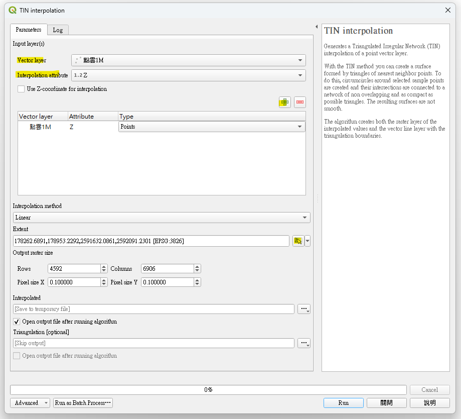
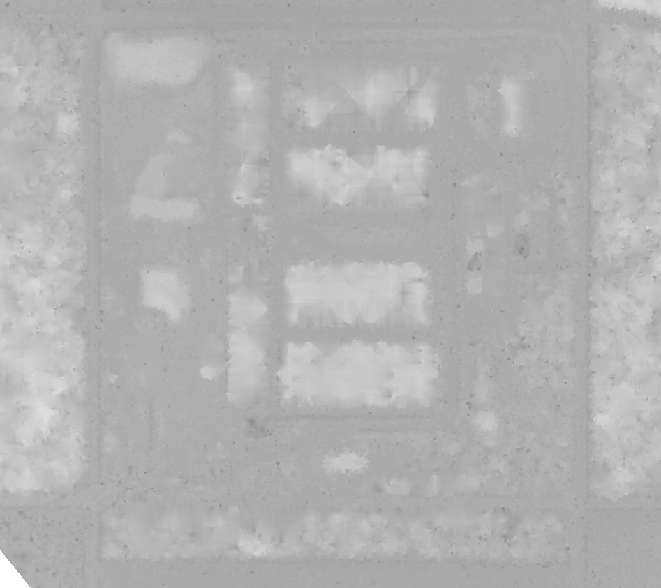
建立設計完成面之點資料
以鋪面為例，通常圖說會標示為EL多少，這部分的數值再扣除掉AC鋪面厚度、碎石級配厚度之後就能得知回填面到EL多少，如為建築物則需要考慮其擋土型式，下部基礎的開挖面EL等等，這些都是設計完成面之點資料高程來源。
這次的範例因為建築物基礎部分都已回填完成，故只需要考慮池體開挖以及非建築物鋪面部分的點資料即可。
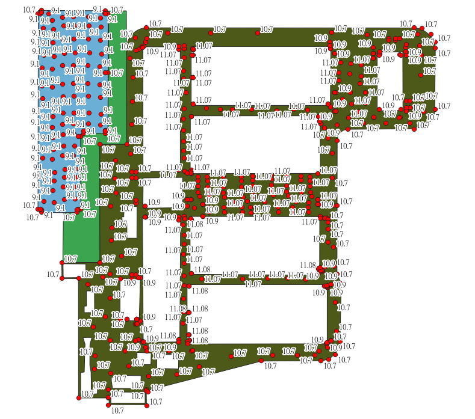
製作DESIGN_DTM
方法同製作UAV_DTM，看到的東西也是黑灰白的樣式。
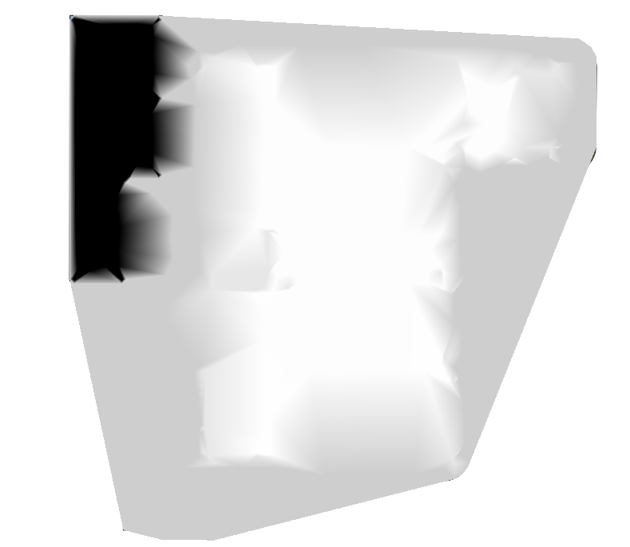
建立土方計算範圍
土方計算範圍的建立可以透過New Shapefile進行，除了用正射影像當基底去框選以外，也能夠先把設計圖上的配置圖DXF導入到QGIS作為基底參考。
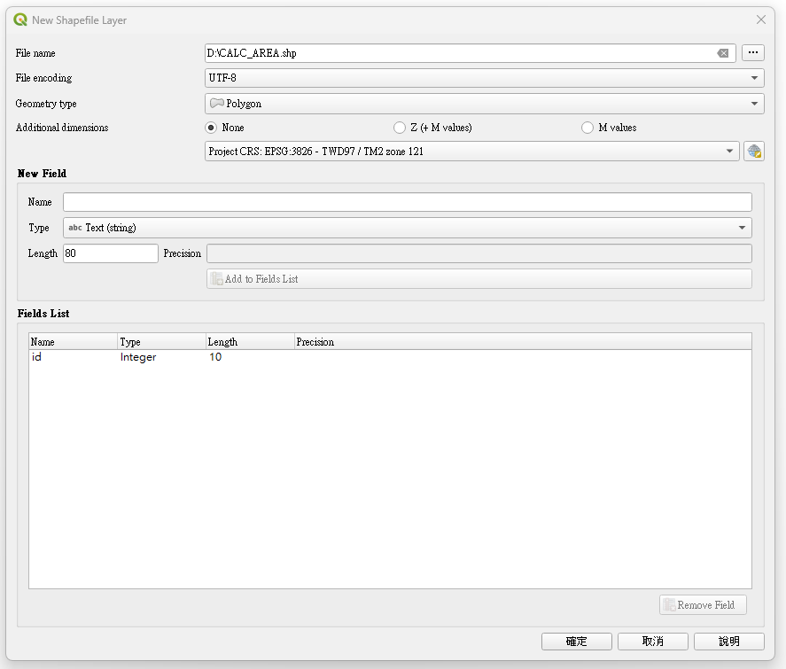
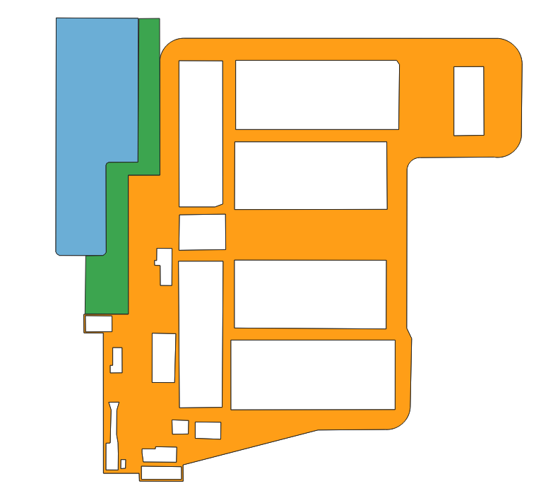
對兩組DTM資料做計算範圍遮罩
為了讓畫面更加好看，可以用計算範圍遮罩來針對兩組DTM資料進行處理，遮罩範圍才會保留數值，其餘區域都會轉為No Data，後續進行土方計算時會自動忽略No Data的區域。
操作位置: Processing Toolbox > clip raster by mask layer
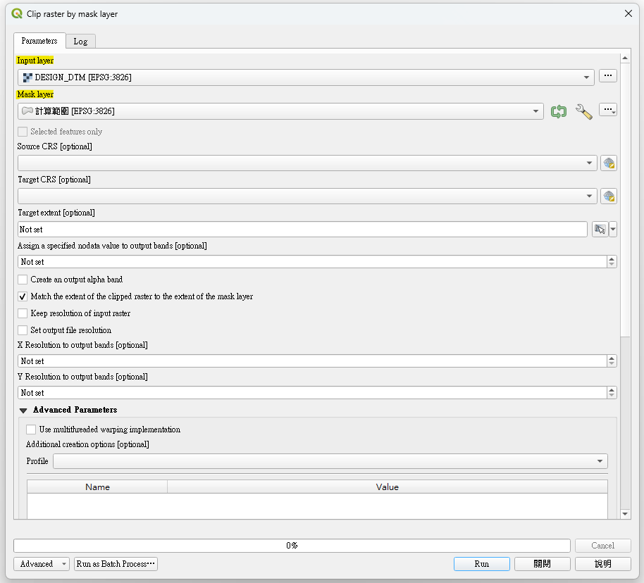
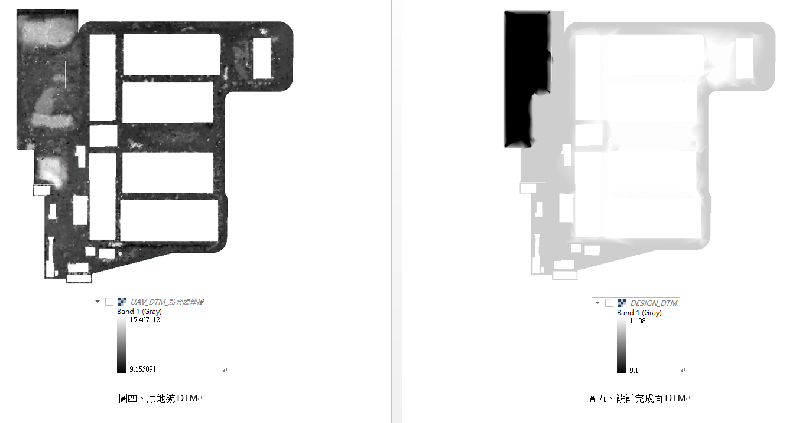
生成兩組DTM之高程差
透過Raster Calculator進行網格運算，以設計DTM扣除原地貌DTM後即可得到高程差DTM，針對高程差DTM做各網格的高程差體積累加便是土方量體成果。
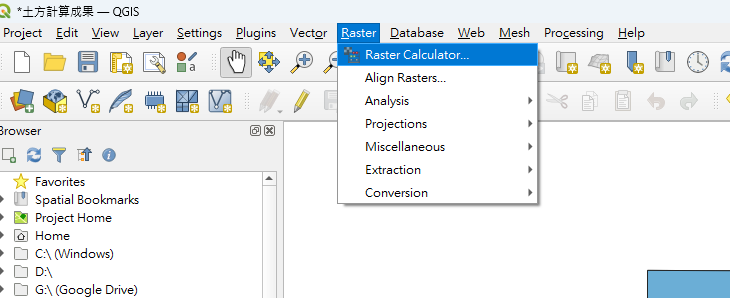
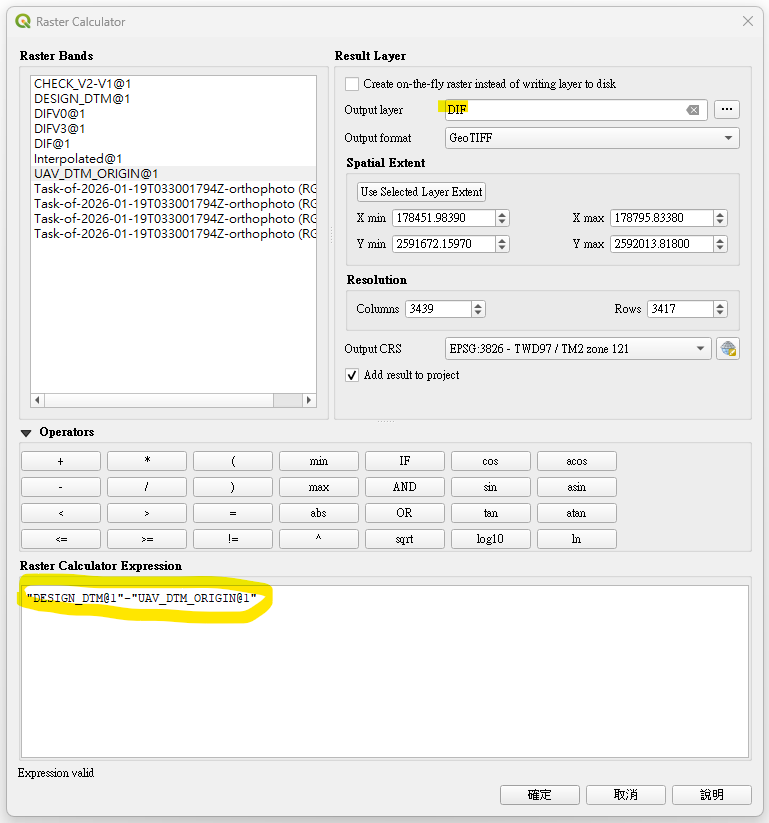
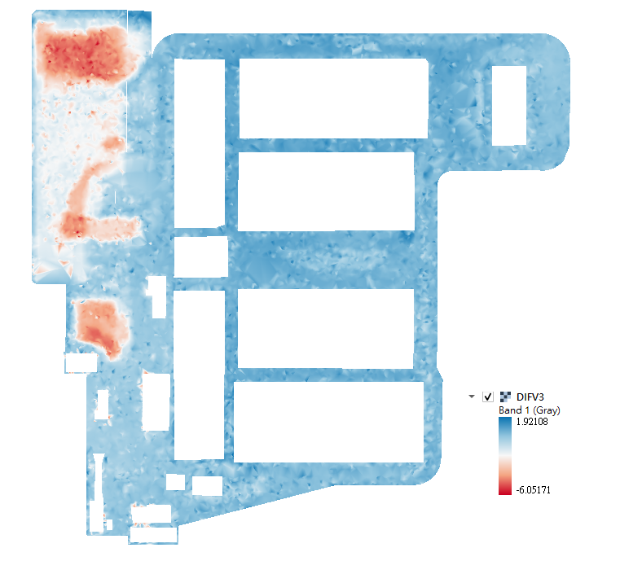
求得高程計算範圍之土方量體成果
經遮罩後的計算範圍可透過 Raster surface volume 取得高程差的土方報告
操作位置: Processing Toolbox > Raster surface volume
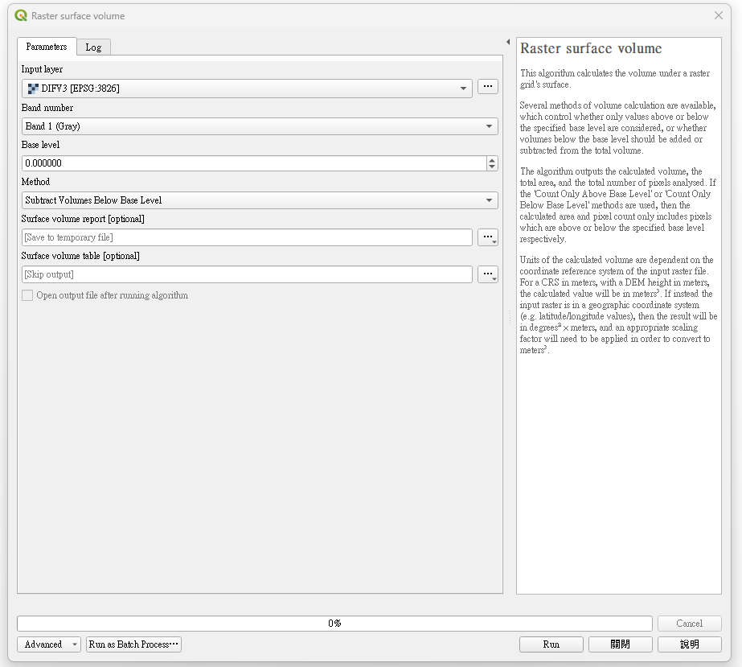
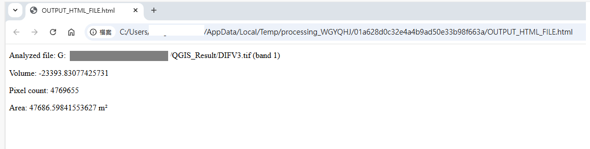
踩坑過程
成果報告標準值
土方計算至少應納於5cm~10cm之範疇，因本次航拍照片將近851張，電腦在計算會很卡，故原本1秒取樣1張的部分改5秒取樣1張進行試算，發現照片重疊率不足，導致GCP精度成果報告高程誤差平均為60cm。
後續改以2秒取樣1張進行試算，便可得到GCP精度成果報告高程誤差為5cm以內，點雲成果可用。
編輯點資料
經Data Source Manager-Delimited Text收進來的 CSV是不能編輯的，需要先轉成SHP才能做編輯
WebODM也能生出DTM為什麼不要直接用?
DTM網格如要將不合理點資料進行濾除需要透過Raster Calculator換算，相對點資料的過濾比較不直覺。
不合理點雲濾除方式
點雲計算結果難免有些怪異的計算點，建議先從點資料的Source開始進行初步過濾，再來針對局部內容進行限定範圍過濾，最後再套疊正射影像進行小範圍處理(如營建材料堆置區、草堆之處理)
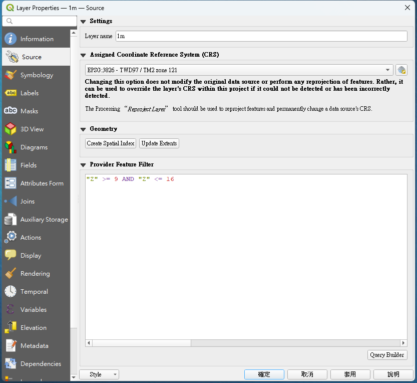
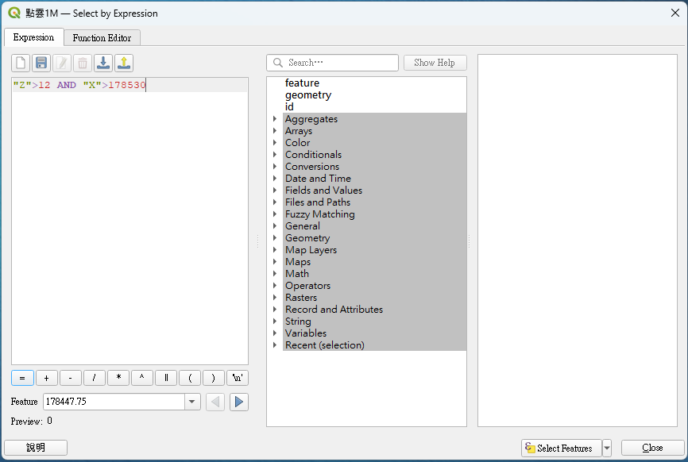
設計完成面之點資料
鋪面會需要先扣除AC厚度、級配厚度等等，因此基地的部分就會先劃設好設計完成面高程，再透過之前所撰寫好的工具來針對線段進行點資料放樣，惟須注意當放樣的長度較遠時，中間會需要再補給個高程點讓QGIS比較好做TIN。
TIN怎麼操作結構線?
圖說上會有部分是結構線，如未納入TIN演算法作為強制約束邊則會讓三角形的邊線穿越結構線，導致生成結果不合理，原本有水溝的部分會有高程缺角，故在進行TIN演算時，可將DXF上的線段設定為Structure Line 納入TIN Interpolation進行演算，便能提供TIN作為約束邊。
計算遮罩如何進行挖洞?
遮罩的用途是製造一個範圍來限縮底圖範圍，類似XCLIP的功能，但若要進行挖洞就必須要使用到Different的幾何關係，用一個大框框包住很多小框框，這樣就能將基地中的建築物區域進行挖洞不納入計算範圍。
面資料的建立?為什麼DXF不能匯入面??
一開始嘗試面資料建立是想要透過CAD中的Region或者是Hatch，但QGIS透過DXF Importor的時候他只吃點跟線，理論上要可以匯入面域之類的物件，但不知道為何不行。後來還是透過QGIS介面針對底圖來做描繪，搭配DXF所轉出的線資料來進行參考輔助。